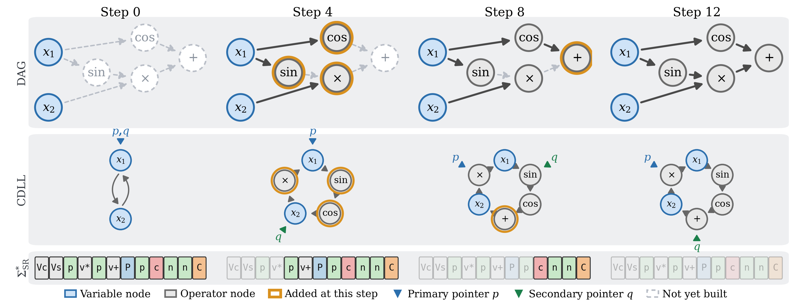
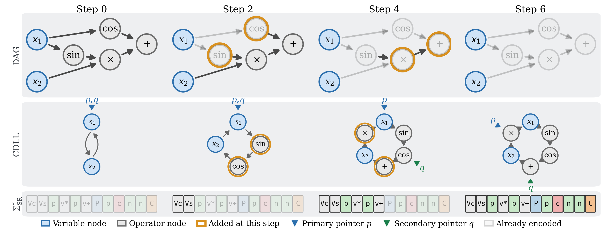

How It Works
IsalSR writes a symbolic regression expression DAG as a string of instructions that drive a circular doubly linked list with two mobile pointers. This page follows Section 3 of the paper: the alphabet, the decoder, the encoder, and the canonical string that makes the encoding an isomorphism invariant.
The Core Idea
An expression is a labeled directed acyclic graph: leaves are input variables or learnable constants, internal nodes carry an operation, and an edge means “ provides input to ”. A DAG with internal nodes admits node numberings that all encode the same expression. Each occupies its own point in a solver's search space and consumes a fitness evaluation without adding diversity. IsalSR maps every one of them to a single string.
Two-Tier Token Encoding
Single-character tokens move the pointers, create an edge, or do nothing.
Two-character compound tokens (Vℓ, vℓ) insert a node
of label ℓ. The tokenizer resolves the two tiers by position: a bare
c is the edge instruction, a c following V
or v is the Cos label.
Acyclicity Is Structural
Before an edge is added by C/c, a BFS reachability test
runs and the instruction is silently skipped if the edge would close a cycle.
V/v need no test: a freshly created node has no outgoing
edges. Every string over the alphabet therefore decodes to a valid DAG.
Commutative Encoding
The alphabet carries no Sub and no Div. Both are identities away from commutative form: and . That leaves Pow as the only operation whose operands must be ordered.
Operand Order
Each node keeps an ordered input list ,
its in-neighbors in edge-insertion order. For Pow,
is the base and
the exponent. The creation edge
of a Vℓ/vℓ token is always the first, so the base is
fixed by the token that creates the node.
The Instruction Set
The alphabet has 31 tokens: 7 single-character tokens and compound tokens, one pair per label. The label set carries one label per mathematical operation, and an operation expressible as a composition of others receives none.
Movement, Edge and No-op Tokens
| Token | Type | Semantics |
|---|---|---|
| N | Movement | Primary pointer |
| P | Movement | Primary pointer |
| n | Movement | Secondary pointer |
| p | Movement | Secondary pointer |
| C | Edge | Create ; skipped if it would close a cycle |
| c | Edge | Create ; skipped if it would close a cycle |
| W | No-op | State unchanged |
Labeled Node Insertion Tokens
Vℓ creates a node of type ℓ, adds the edge
, and inserts
the node into the list immediately after the primary pointer — which does
not move. vℓ does the same from the secondary pointer.
The table below is Table 1 of the paper; † marks a numerically protected
implementation.
| Token | Type | Arity | Evaluation |
|---|---|---|---|
| Variadic, commutative | |||
| V+ | Add | variadic (≥2) | |
| V* | Mul | variadic (≥2) | |
| Unary | |||
| Vg | Neg | 1 | |
| Vi | Inv | 1 | † |
| Vs | Sin | 1 | |
| Vc | Cos | 1 | |
| Ve | Exp | 1 | † |
| Vl | Log | 1 | † |
| Vr | Sqrt | 1 | † |
| Va | Abs | 1 | |
| Binary, non-commutative — the only one | |||
| V^ | Pow | 2 | † |
| Leaf | |||
| Vk | Const | 0 | Learnable real constant |
| — | Var | 0 | Input variable , pre-inserted, never created by a token |
Every Vℓ token has a vℓ counterpart acting on the secondary
pointer: 12 labels × 2 pointers = 24 compound tokens, plus 7 single-character
tokens = 31.
Adding a further unary operation, for instance, would extend this table and the token count and would change no result of the theory. A further non-commutative operation would in addition extend the first-operand rule and the operand-order condition of isomorphism.
Machine State and Initial Configuration
The machine state is the quadruple : the partially built DAG, the circular list whose elements are node identifiers, and the two pointer positions. Pointers index list positions, not graph nodes; the node at position is .
For input variables:
- with identifiers in variable-index order, and .
- , circular.
- .
Variables are pre-inserted and distinguishable. An isomorphism must fix each of them, since renaming would change the function. That is what makes starting the encoder from canonical by definition, and it cuts the candidate bijections from to .
S2D: String → DAG
S2D is a deterministic state machine. It tokenizes the string and applies one transition
per token. Tokenization costs , each
C/c costs a BFS reachability check, and every other token is
constant time, for
overall.
The trace below decodes VcVspv+Ppc over variable, building . It is the worked example of Section 3.4 of the paper, and it is also that DAG's canonical string.
| # | Token | Action | List | Pointers | Edges |
|---|---|---|---|---|---|
| 0 | — | Initial state | [x₁] |
p=x₁, q=x₁ | ∅ |
| 1 | Vc | Insert Cos (id 1) via p=x₁; creation edge x₁→cos | [x₁ cos] |
p=x₁, q=x₁ | x₁→cos |
| 2 | Vs | Insert Sin (id 2) via p=x₁; inserted after p, so it lands before cos | [x₁ sin cos] |
p=x₁, q=x₁ | x₁→cos, x₁→sin |
| 3 | p | Secondary pointer retreats, wrapping around the ring | [x₁ sin cos] |
p=x₁, q=cos | unchanged |
| 4 | v+ | Insert Add (id 3) via q=cos; creation edge cos→+ | [x₁ sin cos +] |
p=x₁, q=cos | …, cos→+ |
| 5 | P | Primary pointer retreats onto the new Add node | [x₁ sin cos +] |
p=+, q=cos | unchanged |
| 6 | p | Secondary pointer retreats onto Sin | [x₁ sin cos +] |
p=+, q=sin | unchanged |
| 7 | c | Edge q→p, i.e. sin→+, completing the second operand of the sum | [x₁ sin cos +] |
p=+, q=sin | x₁→cos, x₁→sin, cos→+, sin→+ |
Run it yourself in the playground.

VcVspv*pv+PpcnnC. The DAG grows as each instruction inserts a labeled node
(V/v) or a directed edge (C/c), with the
primary and secondary pointers navigating the circular doubly linked list.
D2S: DAG → String
D2S is a greedy encoder. Given a DAG it produces a string with , maintaining an output DAG alongside index maps between the two node sets.
At each step it walks the spiral displacement set
,
ordered by , so the
cheapest pointer displacement is tried first — the pair
costs exactly
movement tokens. For each pair it
evaluates four candidate operations in strict priority order:
Vℓ, then vℓ, then C, then c.
The first valid one is emitted and the loop continues until every node and edge of
has been placed.
Insertion outranks edge creation because a Vℓ token places a node
and an edge at once. The outer loop runs at most
times over
displacement pairs, giving
.
The greedy string is not an invariant: it reads the input DAG's node numbering, so two numberings of one expression can give two different strings. Removing that dependence is what the next section is for.

The Fast Canonical String
Minimizing over every valid encoding gives the exhaustive canonical string , the lexicographically smallest among the shortest — correct, and . IsalSR instead computes the fast canonical string by replacing D2S's arbitrary candidate choice with an isomorphism-invariant one, under two rules.
Rule 1 — first-operand eligibility
A Pow candidate whose ordered input list is already non-empty may be created from the acting pointer node only when , so each Pow node is created through its base. The rule defers a candidate and never discards one: the base is an in-neighbor, hence strictly earlier in every topological order, so it is eventually inserted and the candidate becomes eligible.
Rule 2 — invariant-key greedy selection
Each eligible candidate gets the key : its label character, then its 1-WL subtree hash. If the minimum is unique it is taken greedily, with no backtracking and no dependence on the numbering. If several candidates tie — they share a label and a subtree hash — the algorithm backtracks over the tied group alone and returns the lexicographically minimal result.
The hash is computed bottom-up in reverse topological order, in for the whole DAG. It captures the full rooted subtree isomorphism type, so two candidates can be automorphism-equivalent only if their keys agree. On the greedy path the algorithm is ; ties cost over tied decision points of size . Fewer than 4% of random expression DAGs tie at all.
Worked example
Take , with
and
. Number its internal nodes so that Sin
receives the lower identifier and greedy D2S emits VsVcpv+Ppc; number them the
other way round and the same procedure emits VcVspv+Ppc. The two strings encode
one expression and differ only in the identifiers.
Now apply Rule 2. At the first branch point both Sin and Cos are uninserted out-neighbors of
. Their subtree hashes differ, but the
comparison never reaches them: the label component already orders c before
s, the best-key group is the singleton
, the candidate is taken
greedily and no backtracking occurs. Both numberings return
VcVspv+Ppc.
Under the reachability condition — every non-variable node reachable from some variable — this is a complete labeled-DAG invariant:
Expression DAGs delivered by a host solver need not satisfy that condition, for one structural reason: every insertion token creates a node together with a creation edge, so a non-variable node of in-degree zero has no encoding at all. Operation nodes consume operands and always carry in-edges; Const is the sole exception, being an evaluation-neutral leaf. One normalization step at the interface supplies the missing edge, anchoring each in-degree-zero constant to . It is the identity on every DAG that already satisfies the condition, it never removes an edge, and it leaves evaluation unchanged.